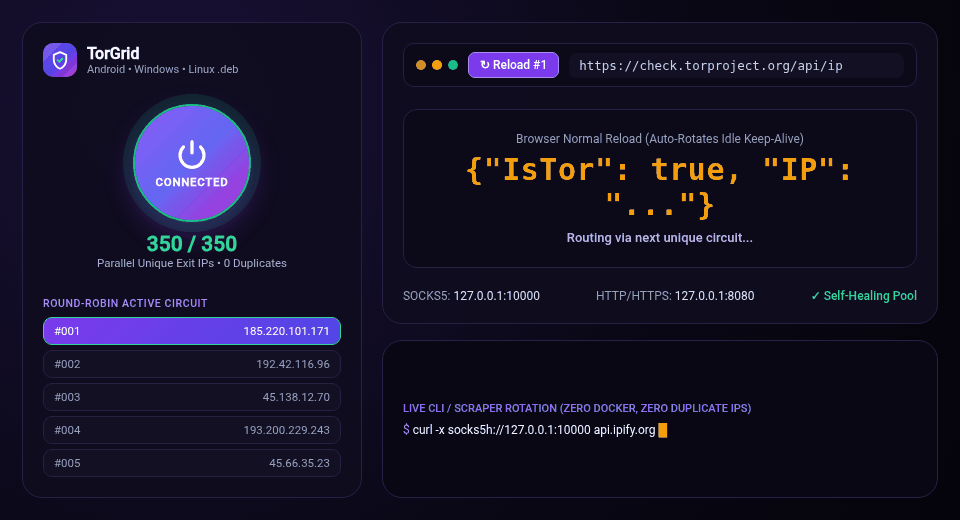
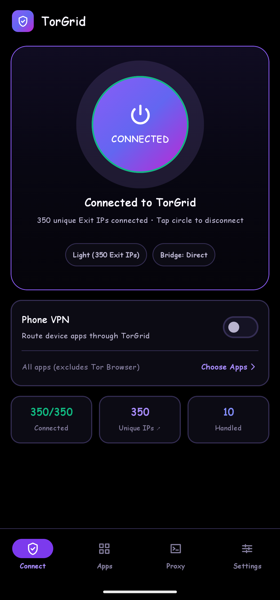
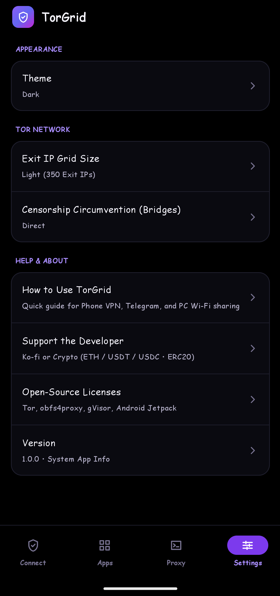
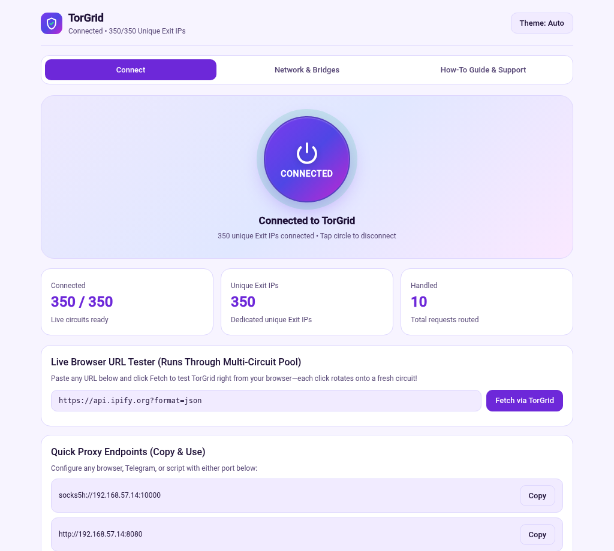

Use hundreds of strictly unique, non-duplicate Tor Exit IPs in parallel behind a single local
SOCKS5 (:10000) & HTTP (:8080) port on Android,
Windows, and Linux — with zero Docker, zero config files, and zero technical setup.
tor & obfs4proxy on Android • Silent System Tray on Windows & Linux

Whether you're running OSINT & web scraping tools, bypassing censorship on Telegram, or sharing a rotating proxy from your phone to a locked laptop over Wi-Fi.
Choose Eco (100), Light (350), Standard (700), or Turbo (1,100). Duplicate Exit IPs are automatically disconnected and replaced from hot-standby spares without disturbing active unique circuits.
Every new connection steps round-robin across your connected IPs—and idle Keep-Alive web sockets close cleanly after 1.8s of silence so normal browser reloads get a fresh IP automatically.
Route all device apps (automatically bypassing Tor Browser) or pick individual apps via split-tunneling while local :10000 SOCKS5 & :8080 HTTP stay active simultaneously.
Zero terminal windows required. Manage Connect/Disconnect, copy your active proxy IP, and toggle Wi-Fi LAN sharing directly from your top bar or Windows notification tray.
Locked strictly to 127.0.0.1 by default on public Wi-Fi. Flip on Share on Wi-Fi LAN anytime (with optional password protection) to route other PCs or phones through TorGrid.
On restricted ISP, campus, or workplace networks where direct Tor is blocked, switch in 1 click to built-in obfs4 bridges or paste custom @GetBridgesBot lines.
All official binaries are published and checksummed on GitHub Releases.
| Platform | Package | Notes |
|---|---|---|
| Android (8.0+) | torgrid.apk | Universal arm64-v8a + armeabi-v7a APK (tor & obfs4proxy included; Obtainium supported) |
| Debian / Ubuntu / Kali (x64) | torgrid_1.0.0_amd64.deb | 1-command apt installer • Auto-installs dependencies + Desktop & System Tray launcher |
| Debian / Raspberry Pi (ARM64) | torgrid_1.0.0_arm64.deb | Native 64-bit ARM .deb package for Raspberry Pi OS & Debian/Ubuntu ARM64 |
| Windows 10 / 11 (x64) | torgrid-windows-amd64.exe | Portable System Tray GUI executable (uses installed Tor Browser or Tor Expert Bundle tor.exe) |
| Linux Static Binaries | amd64 · arm64 | Standalone static binaries for Arch Linux, Fedora, Alpine, or headless VPS servers |
| SHA-256 Checksums | SHA256SUMS | APK Signing Cert SHA-256: c3989cd3a77c2061c0874073b64c169782db43762a0dca107826a650152df773 |
Install on Debian, Ubuntu, or Kali Linux and launch silently into your System Tray:
curl -fLO https://github.com/localhost-server/TorGrid/releases/latest/download/torgrid_1.0.0_amd64.deb sudo apt install -y ./torgrid_1.0.0_amd64.deb torgrid --daemon # Test rotating Exit IPs via SOCKS5 (:10000) or HTTP (:8080): curl --socks5-hostname 127.0.0.1:10000 https://check.torproject.org/api/ip curl -x http://127.0.0.1:8080 https://api.ipify.org?format=json
Unified experience across Android, System Tray, and the local Browser Dashboard.



Common questions about TorGrid's multi-circuit proxy pool and split-tunnel VPN.
Standard Tor (:9050) and Orbot route all your requests through a single circuit for ~10 minutes, causing slow speeds and fast rate-limiting. TorGrid connects 100 to 1,100 guaranteed non-duplicate Tor Exit IPs concurrently and distributes connections across all of them in round-robin order.
Zero Docker and zero configuration files. On Android, Tor and obfs4proxy are bundled inside the APK. On Debian/Ubuntu/Kali, the .deb installer pulls tor & obfs4proxy automatically via apt and adds a native System Tray icon. On Windows, double-clicking the .exe runs silently in your System Tray.
Yes. By default TorGrid binds strictly to 127.0.0.1 so strangers on public Wi-Fi cannot touch your proxy. Turning on "Share on Wi-Fi LAN" in the Android Proxy tab or PC System Tray immediately exposes :10000 (SOCKS5) and :8080 (HTTP) on your local Wi-Fi IP with optional password authentication.
TorGrid is 100% free with zero ads and zero telemetry. If it saves you time or proxy costs, you can support the project:
Ethereum / ERC20 (ETH / USDT / USDC):
0x9d7fa4d4b1daad6464d64851fa021f49f6e54836